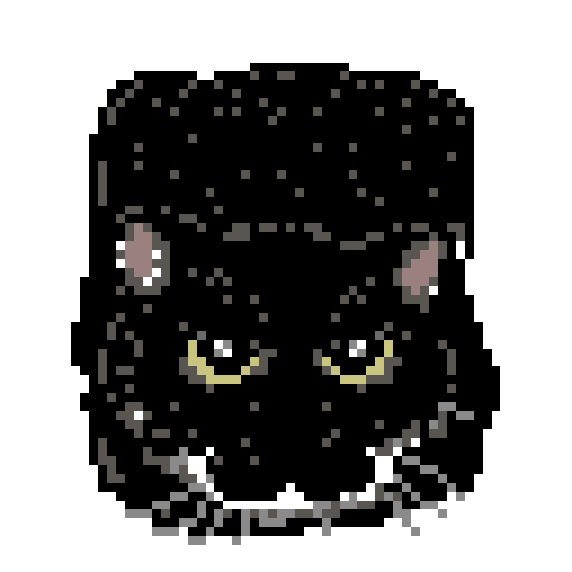

COMBINATORICS
Lehmer Codes
Interactive notes on pattern avoidance, Lehmer codes, and Dyck paths.
A collection of my math projects and codes. Most detailed explanations live inside the papers or slides.

Interactive notes on pattern avoidance, Lehmer codes, and Dyck paths.
Paper and Beamer talk on Hausdorff measure and box-counting dimension.
Comparing random-walk and classical centralities in real networks.
Experiments with Betti curves, filtrations, and topic evolution.
A combinatorial journey through Sperner’s Lemma, the Hex Theorem, Brouwer’s Fixed Point Theorem, and the Jordan Curve Theorem.